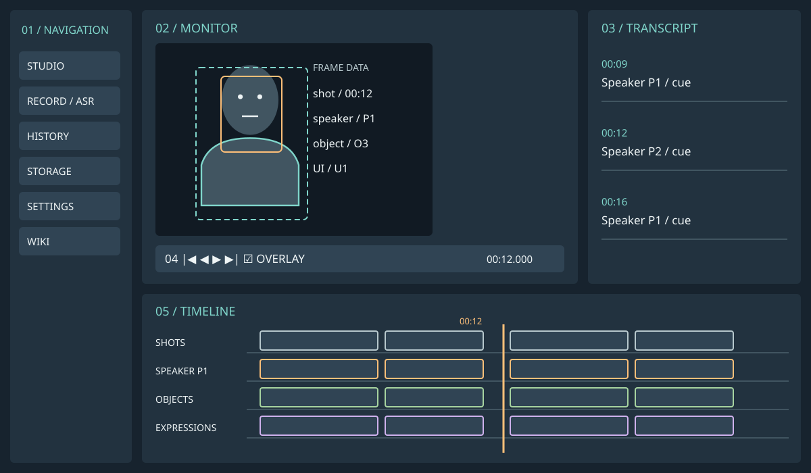

Start here
Media as data and an editing workspace
ag-media-studio is a local workspace for video and audio analysis, transcription, speakers and speech synthesis. Its previous name is Voice Studio. People use the editor; agents navigate a compact graph with source provenance and timestamps.
This wiki explains layer responsibilities, source locations and result checks. Illustrations are schematic UI examples, never frames from customer videos.


Start with a task
Documentation maintenance
Edit docs/wiki/content.json and vector assets under docs/wiki/assets/. One build generates the Markdown mirror and the offline HTML edition. RU/EN pages link to each other. As in ag-design, wiki files live alongside code; no GitHub publication has been performed.
python3 scripts/build_wiki.py
python3 scripts/build_wiki.py --checkOpen /wiki?ui=en. The wiki does not execute models or read recordings. Its navigation link opens a separate tab, keeping the active studio workspace mounted.